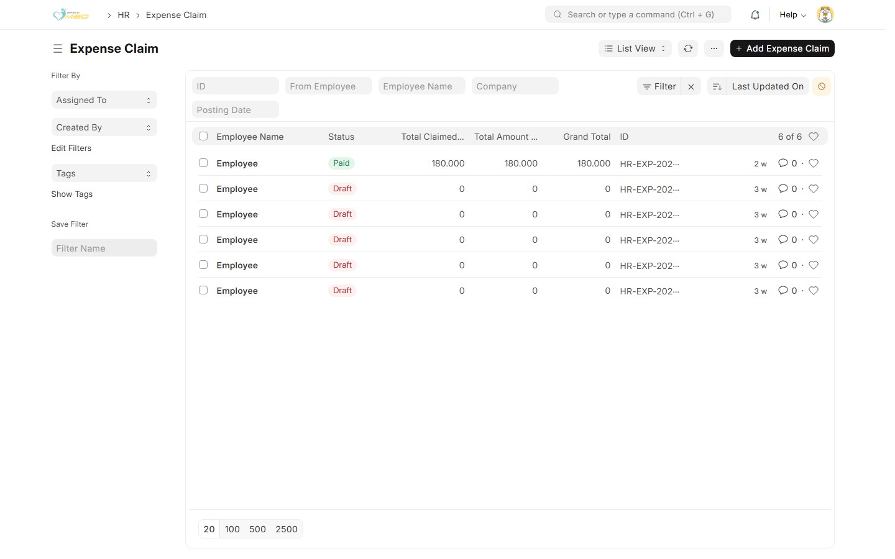
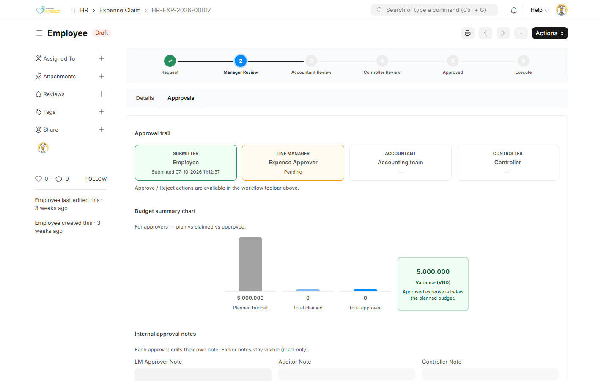
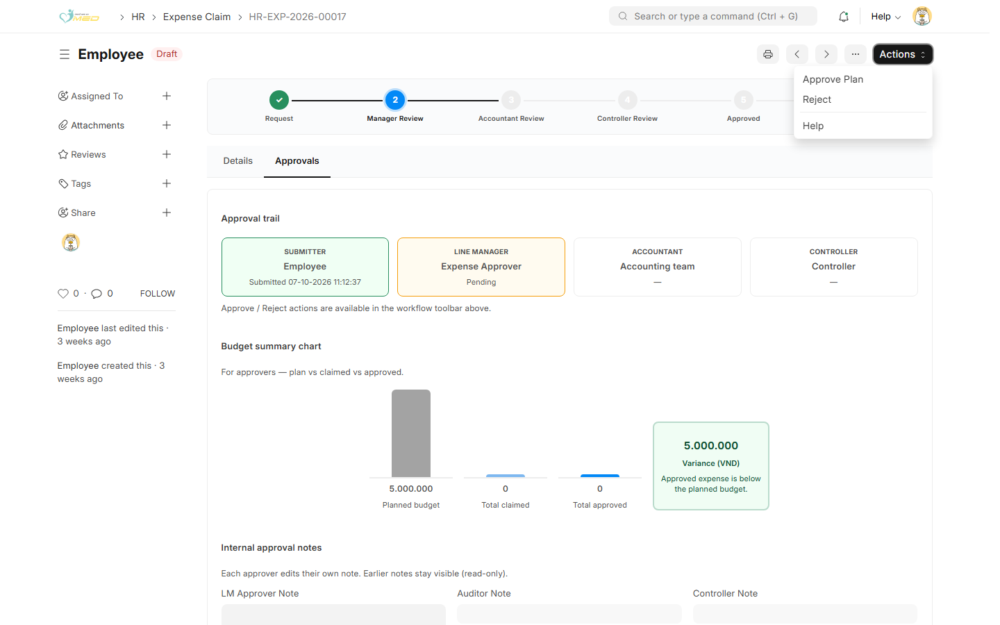

Mục đích
Bạn duyệt phiếu khi mình là Expense Approver (Người duyệt) trên phiếu đó. Có hai lần: duyệt kế hoạch, rồi duyệt chi tiết chi phí thực tế sau khi nhân viên gửi số liệu.
Phiếu nhân viên chỉ Save, chưa Submit Plan hoặc Submit Actual, không có trong danh sách của bạn. Cột Status có thể vẫn là Draft. Xem thanh quy trình: bước Manager Review đang sáng thì phiếu đang chờ bạn.
Duyệt kế hoạch
Bước 1: Mở danh sách
Vào HR → Expense Claim. Mở phiếu đang chờ.

Bước 2: Xem Approvals
Phiếu mở tab Approvals. Thẻ Line Manager trên Approval trail đang Pending. Xem Budget summary chart để so ngân sách kế hoạch với số đã kê. Có thể ghi LM Approver Note.

Bước 3: Duyệt hoặc từ chối
Mở Actions:
- Approve Plan — duyệt kế hoạch. Không đề nghị tạm ứng thì nhân viên được nhập chi tiết chi phí thực tế. Có đề nghị tạm ứng thì phiếu sang Kiểm Toán để chi đề nghị tạm ứng
- Reject — trả phiếu. Nhập lý do. Nhân viên đọc lý do rồi gửi lại

Sau khi duyệt, màn hình về danh sách và phiếu rời hàng chờ của bạn.
Duyệt chi tiết chi phí thực tế
Khi nhân viên đã chọn Submit Actual, phiếu quay lại bước Manager Review. Mở lại phiếu, vẫn ở tab Approvals.
Trong bảng duyệt từng dòng, số nhân viên kê là chỉ đọc. Bạn sửa được Approved Amount (Số tiền được duyệt, không cao hơn số đã kê), Cost Center và ghi chú dòng.
Mở Actions:
- Approve Expense — chuyển phiếu sang Kiểm Toán
- Reject — trả phiếu cho nhân viên sửa chi tiết chi phí thực tế